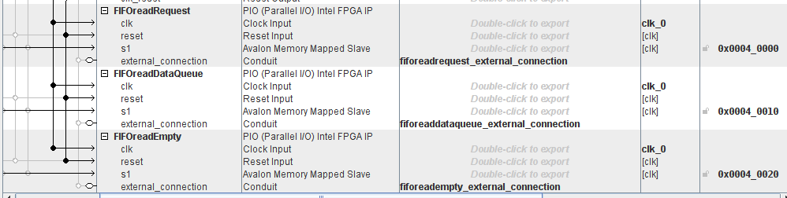

Processor-FPGA Communication: Using FIFO Processor Part¶
| Date: | 20 Sep 2019 |
|---|
What are we gonna do?¶
- We will write a simple counter in the FPGA Part, the counter increases \(1\) every
clkcycle - This counter makes a write request every \(2^{24}\)
clkcycle to the FIFO, and writes the counter value to the FIFO - To FIFO read port is connected to 3 PIOs generated by Platform Designer(Qsys), these 3 PIOs can be directly accessed by the Processor via memory mapping, since this memory is shared by the FPGA and Processor
- Meanwhile, the 8 LEDs on the DE10-NANO board are connected to
usedw(used words) which indicates the number of data stored in the FIFO - We will write a simple reader in the Processor Part
- User execute the compiled C code in the terminal, then they type in number of data to read
- They will see read data printed to the terminal, as well as the decrease in number indicated by the LED
Modify the Standard Example HPS_FPGA_LED/main.c¶
- Recall the address map earlier

- Use it
// FIFO
h2p_lw_FIFOreadRequest_addr = virtual_base + (
(unsigned long)(ALT_LWFPGASLVS_OFST + 0x40000) &
(unsigned long)(HW_REGS_MASK)
);
h2p_lw_FIFOreadDataQueue_addr = virtual_base + (
(unsigned long)(ALT_LWFPGASLVS_OFST + 0x40010) &
(unsigned long)(HW_REGS_MASK)
);
h2p_lw_FIFOreadEmpty_addr = virtual_base + (
(unsigned long)(ALT_LWFPGASLVS_OFST + 0x40020) &
(unsigned long)(HW_REGS_MASK)
);
- Handle FIFO reading
int FIFOread(){
if(*(uint32_t *)h2p_lw_FIFOreadEmpty_addr != 1){
*(uint32_t *)h2p_lw_FIFOreadRequest_addr = 1;
usleep(1);
*(uint32_t *)h2p_lw_FIFOreadRequest_addr = 0;
return(0); // successful
}
return(1); // failed due to empty
}
The full code¶
#include <string.h>
#include <inttypes.h>
#include <stdio.h>
#include <unistd.h> // provides access to the POSIX operating system API
#include <fcntl.h> // header in the C POSIX library
#include <sys/mman.h> // memory management
#include "hwlib.h" // location: SoC EDS\embedded\ip\altera\hps\altera_hps\hwlib\include
#include "socal/socal.h" // location: SoC EDS\embedded\ip\altera\hps\altera_hps\hwlib\include\soc_cv_av\socal
#include "socal/hps.h"
#include "socal/alt_gpio.h"
#include "hps_0.h" //
#define HW_REGS_BASE ( ALT_STM_OFST )
#define HW_REGS_SPAN ( 0x04000000 )
#define HW_REGS_MASK ( HW_REGS_SPAN - 1 )
//////////////////////////////////////////////////
void *virtual_base;
void *h2p_lw_led_addr;
// FIFO
void *h2p_lw_FIFOreadRequest_addr;
void *h2p_lw_FIFOreadDataQueue_addr;
void *h2p_lw_FIFOreadEmpty_addr;
int fd;
//////////////////////////////////////////////////
int memoryMapping(){
// Map the **Address Space** for LED registers
// into **User Space** so we can use them
// We'll actually map in the entire CSR ??? span of
// the HPS since we want to access various registers
// within that span.
fd = open("/dev/mem", ( O_RDWR | O_SYNC ) );
if( fd == -1 ){
printf("Error: can't open \"/dev/mem\" \n");
return(1);
}
virtual_base = mmap(NULL, HW_REGS_SPAN, (PROT_READ|PROT_WRITE),
MAP_SHARED, fd, HW_REGS_BASE);
if(virtual_base == MAP_FAILED){
printf("Error: mmap() failed \n");
close(fd);
return(1);
}
h2p_lw_led_addr = virtual_base + (
(unsigned long)(ALT_LWFPGASLVS_OFST + LED_PIO_BASE) &
(unsigned long)(HW_REGS_MASK)
);
// FIFO
h2p_lw_FIFOreadRequest_addr = virtual_base + (
(unsigned long)(ALT_LWFPGASLVS_OFST + 0x40000) &
(unsigned long)(HW_REGS_MASK)
);
h2p_lw_FIFOreadDataQueue_addr = virtual_base + (
(unsigned long)(ALT_LWFPGASLVS_OFST + 0x40010) &
(unsigned long)(HW_REGS_MASK)
);
h2p_lw_FIFOreadEmpty_addr = virtual_base + (
(unsigned long)(ALT_LWFPGASLVS_OFST + 0x40020) &
(unsigned long)(HW_REGS_MASK)
);
return(0);
}
int FIFOread(){
if(*(uint32_t *)h2p_lw_FIFOreadEmpty_addr != 1){
*(uint32_t *)h2p_lw_FIFOreadRequest_addr = 1;
usleep(1);
*(uint32_t *)h2p_lw_FIFOreadRequest_addr = 0;
return(0); // successful
}
return(1); // failed due to empty
}
int FIFOreadContinuously(){
int i;
int n;
while(1){
printf( "Number of words to read: ");
scanf("%d", &i);
for (n=0;n<i;n++){
if(FIFOread()==0){
printf( "Value: ");
printf("%" PRIu32 "\n",*(uint32_t *)h2p_lw_FIFOreadDataQueue_addr);
printf( "\n");
}
else{
printf( "Empty!\n");
}
}
}
return(0);
}
int cleanMemoryAndExit(){
if( munmap(virtual_base,HW_REGS_SPAN)!=0 ){
printf("Error: munmap() failed \n");
close(fd);
return(1);
}
close(fd);
return(0);
}
/////////////////////////////////////////////////////
int main(){
memoryMapping();
FIFOreadContinuously();
cleanMemoryAndExit();
return(0);
}